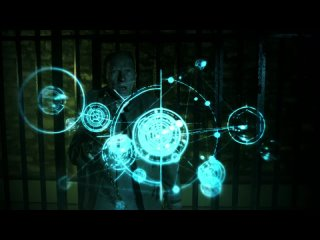
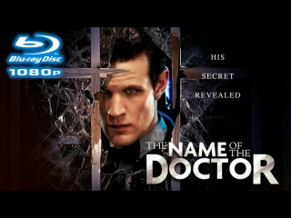
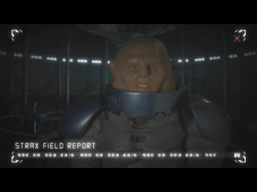
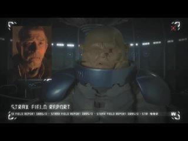
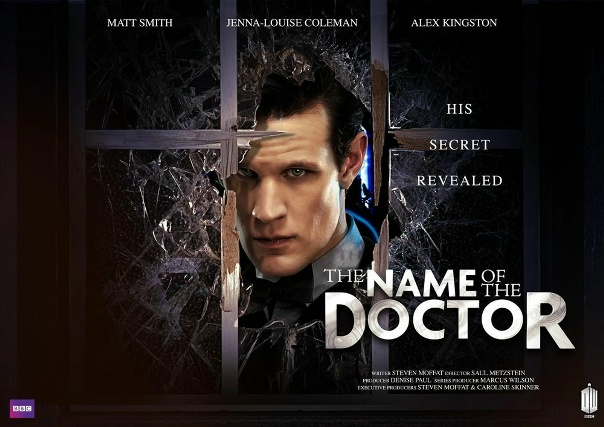

 |
 | Вторая половина 7-го сезона (8 серий) |
 |  |
The Name of the Doctor
Дата выхода: 18 мая 2013
Формат: 45-минутный эпизод
| Варианты озвучек: | * Разные: смотрите по инструкции |
|---|---|
| Скачивание и просмотр: |
Клару вызывают на невозможную конференцию, сообщая ей, что кто-то раскрыл самый страшный секрет Доктора. Кто-то похищает друзей Доктора, ведя его туда, где он ни в коем случае не должен раньше времени быть — его могилу. Это смертельная ловушка, угрожающая разрушить его прошлое, настоящее и будущее.
